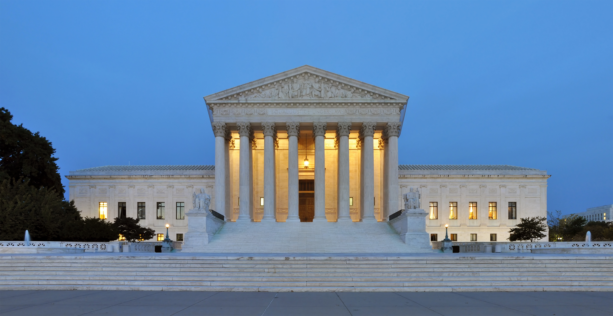
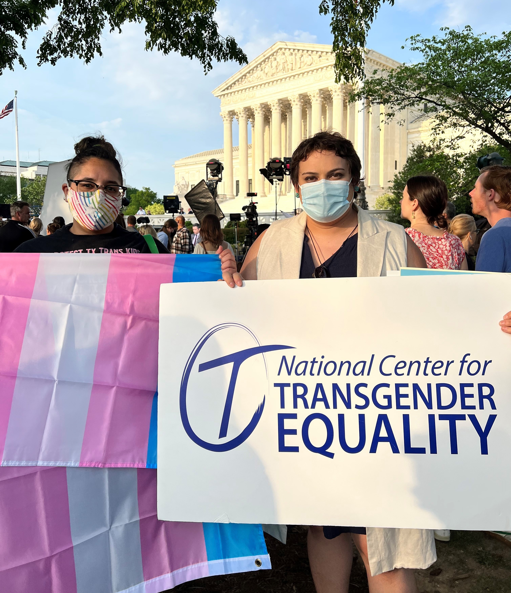

Source: Gallup News
The United States Supreme Court’s historic ruling to strike down Roe v. Wade on June 24 has real and immediate consequences for anyone who can become pregnant.
As President Biden addressed the nation on what he described as a “sad day for the court and the country,” he said the Supreme Court’s decision to revoke a fundamental right sets the country back 150 years.
Without Roe, an estimated 36 million women and other people who can become pregnant may lose access to safe abortions. Anti-abortion laws are not supported by the medical community and are not based on scientific evidence.
Restricting reproductive freedoms could force millions of Americans to carry a pregnancy to term — even if it jeopardizes their health. Others may resort to unsafe measures to terminate a pregnancy on their own.
Denying access to abortion could mean that survivors of sexual violence may be forced to bear the children of their perpetrators.
This “tragic error of the court,” as described by Biden, will have devastating health implications and is expected to increase maternal mortality rates, particularly among People of Color and other marginalized groups, according to health experts.
Source: NPR
The Court had been evaluating the case of Dobbs v. Jackson Women’s Health Organization to determine whether Mississippi’s 15-week abortion ban was constitutional.
Overturning Roe, the landmark ruling that has provided a right to privacy and protected a person’s choice to have an abortion since 1973, means that other rights to privacy — such as using birth control or marriage equality — could now be under threat if further cases go to the Supreme Court.
An estimated 26 states are certain or likely to move quickly to ban abortion. At least 13 states, including Mississippi, have trigger laws that are expected to go into effect, which could criminalize those seeking to terminate pregnancies.
Those in states with the tightest restrictions may have to travel out of state for care or order abortion medication from an out-of-state doctor, where legal.
Research from the Guttmacher Institute shows that nearly 1 in 4 women will have an abortion, and a Pew Research poll estimates that 61 percent of adults believe abortion should be legal.
Most people spend the majority of their reproductive lives trying to avoid getting pregnant for a variety of reasons.
But contraceptives are not perfect. In fact, research shows that from 2000 to 2014, 51 percent of people studied were using a contraceptive method during the month they became pregnant.
When pregnant people lose access to abortion care, research shows they’re more likely to experience financial strain as well as physical and mental health issues, which disproportionately affects people in marginalized groups and those with low socioeconomic status.
For those seeking an abortion in areas with the most restrictions, an analysis from May 2022 estimates that millions will have to travel to a “destination state,” 16 of which have protections in place, to receive abortion care. In Texas, people would have to drive 243 miles to the nearest abortion clinic.
The World Health Organization (WHO) Trusted Source states that “Making health for all a reality, and moving towards the progressive realization of human rights, requires that all individuals have access to quality health care, including comprehensive abortion care services.
”Every major medical group, including the American Medical Association (AMA) and the American College of Obstetricians and Gynecologists (ACOG), is against restricting abortion access.
In 2019, most abortions (93 percent) occurred during early pregnancy during the first 13 weeks of gestation.
In many cases, abortions can be lifesaving.
Amanda N. Kallen, MD, an associate professor of obstetrics, gynecology, and reproductive sciences at Yale School of Medicine and a member of the Healthline Medical Affairs team, said that pregnancy and childbirth have higher complication risks than abortion.
“Women will die from pregnancy because of this decision,” Kallen told Healthline. “This is a country that already has the highest maternal mortality rates among developed countries."
In states with abortion restrictions or bans, both medical and surgical abortion procedures could be limited or revoked entirely.
The long-term repercussions of Roe v. Wade’s reversal are not fully understood, but experts have expressed concern about possible restrictions and limitations on treatments including:
Experts have warned that restricting abortion access will inevitably lead to higher maternal mortality rates, with People of Color more likely to be affected.
Limitations on medical miscarriage care due to pregnancy complications are possible and could seriously harm people.
An estimated 26% of pregnancies end in miscarriage, and miscarriage care (medications or procedures) is similar to abortion care. For example, if treatment for an ectopic pregnancy is delayed or if a pregnant person with sepsis is unable to get an abortion, the miscarriage may go untreated and cause further complications or even death.
The United States already has the highest maternal mortality rate of any developed country.
In 2020, the maternal mortality rate was nearly 24 deaths per 100,000 live births, according to the Centers for Disease Control and Prevention (CDC).
Sarah Prager, MD, MAS, a UW Medicine professor in the department of obstetrics and gynecology, told Healthline that increased maternal mortality rates will be attributed to the increase in unsafe abortions that will occur as a result of abortions being illegal.
“The numbers of abortions will not substantially decrease, they will just be much more difficult to obtain and in some cases, much less safe,” Prager said. “However, the majority of the increased mortality will likely come from pregnant people being unable to get the abortion they need, which leads to continued (and forced) pregnancies.”
Source: Center for Infectious Disease Research and Policy
The physical health effects of being denied an abortion may also vary due to an individual’s prior and present health circumstances.
Kecia Gaither, MD, MPH, FACOG, the director of Perinatal Services at NYC Health + Hospitals/Lincoln in New York City, described three possible scenarios:
Doctors who provide care to individuals living in states with restricted access could face legal consequences. What’s more, fewer medical professionals may receive training in abortion care overall, which could affect the health outcomes of patients in the years to come.
According to an April 2022 study published in Obstetrics & Gynecology, nearly 45% of obstetrics and gynecology residency programs in the United States are certain or likely to lack access to in-state abortion training.
Since abortion care is similar to miscarriage care, this means fewer medical professionals will be trained to perform a miscarriage procedure due to pregnancy complications.
Abortions are also expensive and often not covered by insurance, costing about $500 per procedure. In 2014, 53 percent of abortions were paid for out of pocket, according to research from the Guttmacher Institute. And in a post-Roe world, experts say that abortions will only become more costly.
An abortion can be an emotionally draining process, even when it’s legal. Therefore the mental health effects of carrying an undesired, unplanned, or unhealthy pregnancy to term cannot be overstated, particularly for those subjected to the most restricted access.
It has been shown that being denied an abortion is associated with negative psychological outcomes. The physical and emotional toll of having an abortion may affect other areas of a person’s life, including someone’s family relationships, friendships, workplaces, and communities.
Major mental health associations, including the American Psychological Association and American Psychiatric Association, have opposed the Supreme Court’s ruling.
Lori Lawrenz, PsyD, a licensed psychologist at the Hawaii Center for Sexual and Relationship Health in Honolulu and Healthline Medical Advisory Board member, explained that the psychological repercussions of being denied an abortion could manifest in a number of different ways. These may include:
Victims of sexual violence like rape and incest could be forced to carry a child to term in some states.
Melody Gross, the founder of Courageous SHIFT, a domestic violence coaching company in Charlotte, North Carolina, explained that with little to no abortion access, those experiencing reproductive coercion and abuse are forced to take risks that can be detrimental to their safety and health.
“Being forced to give birth by their abuser can have generational repercussions,” Gross told Healthline.
The Supreme Court’s ruling creates yet another barrier for individuals of low socioeconomic status and marginalized groups to overcome, an issue that is both classist and racist.
“Either we are told not to have kids but are not given proper family planning and reproductive health, or we are told to take care of our kids but are not provided the resources (money, housing, mental health services, etc.) to do so,” Gross said.
“Marginalized groups are in a lose-lose situation. Poor people and other marginalized groups are disproportionately impacted by everything the dominant culture takes for granted,” Gross added.
Overturning Roe could have serious implications for the LGBTQIA+ community, such as the reversal of same-sex marriage.
But the impact may be especially significant for transgender, nonbinary, and gender nonconforming people, who are often left out of the reproductive rights discussion.
While Roe has always been a women’s rights issue, anyone with a uterus who could become pregnant, such as a transgender man, could be denied an abortion in states with restricted access.
Transgender individuals already face discrimination in healthcare settings as is, and are often targeted by conservative lawmakers and anti-trans legislation.
Consider the body of a transgender person, who no longer identifies as a woman, becomes pregnant, and does not have access to abortion services,” said Elle Moxley, founder and executive director at the Marsha P. Johnson Institute. “The struggle for transgender people to access any type of medical care is real; consider the challenges of seeking reproductive care as an additional barrier.”
Moxley added that Supreme Court Justice Clarence Thomas’ remarks about considering other laws affirm that other rights and freedoms are under scrutiny.
“Understand that when you’re a transgender person, the laws as they are written are one thing, but it’s not as if we do not face injustice and discrimination at unspeakable levels daily,” Moxley said.
“The laws enable us some protection, but not all,” Moxley continued. “The thought of those being at stake will set a tone of widespread acceptance of discrimination, of the treating of our community members as less-than-human and undeserving of protection.”

Source: NPR
Only Congress has the power to restore the protections of Roe v. Wade by making a person’s right to an abortion a federal law. This means that during election season this fall and beyond, Roe is on the ballot.
Voting makes voices heard. Protesting connects people around common causes. Donating to clinics near borders of states with the most severe restrictions provides financial relief to help fund additional resources. And providing emotional support to those seeking abortion care could be lifesaving.
“Ensuring that any pregnant individual has the ability to access healthcare is important,” Lawrenz said. “Allow them to know they’re loved and supported, focusing on them as valuable human beings and not just the growing life inside of them.”
Lawrenz added that it may be helpful to allow the person to openly share their emotions.
“Allow any and all feelings to be expressed,” she said. “A vulnerable person filters their thoughts through their fears and vulnerabilities — it’s important to speak love and encouragement to the person to let them know they are supported in whatever way they need to go forward with the pregnancy.”
People may resort to unsafe measures to terminate a pregnancy if resources and access are lacking. Others may be experiencing suicidal ideation or navigating unsafe circumstances with their partner.
If you’re ever concerned that a loved one’s health or safety is in danger because they were unable to get an abortion, Lawrenz advised keeping an open dialogue and refraining from judgmental language.
“Kindness goes a long way when it comes to the mental health effects of abortion,” Lawrenz said.
“By supporting people, by voting for laws that support people, by being cognizant of how words may impact people, and being an advocate instead of silently allowing someone to suffer alone are all ways one may be able to help,” Lawrenz said.
In the days following the Supreme Court’s ruling, waves of furious — albeit peaceful — protests clashed with celebrations among conservative and religious communities.
While restricting abortion access will undoubtedly take a toll on the well-being of millions of individuals who are denied care, regardless of what side you’re on, it’s important to acknowledge the long-term implications on a broader scale.